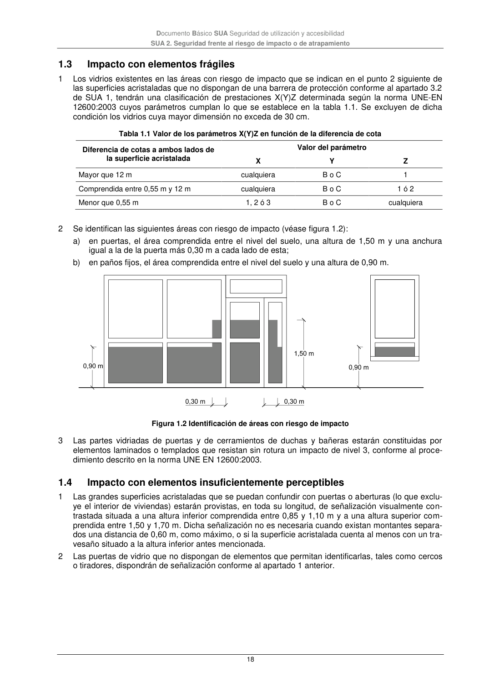

DB-SUA · 1.3 Impacto con elementos frágiles · 1.4 Impacto con elementos insuficientemente perceptibles · versión 2022-06-14
SHA256: 3cfb5bbb135e8f02faebd8b844e03e8947994c18d4c9e675a7d2aa37d1cd5958 · página física 18 de 47 · métodos de encabezado
solo si están cotejados.
Formatos: Markdown · JSON de bloques · PDF p. 18 · imagen PNG
Documento Básico SUA Seguridad de utilización y accesibilidad SUA 2. Seguridad frente al riesgo de impacto o de atrapamiento 18 1.3 Impacto con elementos frágiles 1 Los vidrios existentes en las áreas con riesgo de impacto que se indican en el punto 2 siguiente de las superficies acristaladas que no dispongan de una barrera de protección conforme al apartado 3.2 de SUA 1, tendrán una clasificación de prestaciones X(Y)Z determinada según la norma UNE-EN 12600:2003 cuyos parámetros cumplan lo que se establece en la tabla 1.1. Se excluyen de dicha condición los vidrios cuya mayor dimensión no exceda de 30 cm. Tabla 1.1 Valor de los parámetros X(Y)Z en función de la diferencia de cota Diferencia de cotas a ambos lados de la superficie acristalada Valor del parámetro X Y Z Mayor que 12 m cualquiera B o C 1 Comprendida entre 0,55 m y 12 m cualquiera B o C 1 ó 2 Menor que 0,55 m 1, 2 ó 3 B o C cualquiera 2 Se identifican las siguientes áreas con riesgo de impacto (véase figura 1.2): a) en puertas, el área comprendida entre el nivel del suelo, una altura de 1,50 m y una anchura igual a la de la puerta más 0,30 m a cada lado de esta; b) en paños fijos, el área comprendida entre el nivel del suelo y una altura de 0,90 m. Figura 1.2 Identificación de áreas con riesgo de impacto 3 Las partes vidriadas de puertas y de cerramientos de duchas y bañeras estarán constituidas por elementos laminados o templados que resistan sin rotura un impacto de nivel 3, conforme al proce- dimiento descrito en la norma UNE EN 12600:2003. 1.4 Impacto con elementos insuficientemente perceptibles 1 Las grandes superficies acristaladas que se puedan confundir con puertas o aberturas (lo que exclu- ye el interior de viviendas) estarán provistas, en toda su longitud, de señalización visualmente con- trastada situada a una altura inferior comprendida entre 0,85 y 1,10 m y a una altura superior com- prendida entre 1,50 y 1,70 m. Dicha señalización no es necesaria cuando existan montantes separa- dos una distancia de 0,60 m, como máximo, o si la superficie acristalada cuenta al menos con un tra- vesaño situado a la altura inferior antes mencionada. 2 Las puertas de vidrio que no dispongan de elementos que permitan identificarlas, tales como cercos o tiradores, dispondrán de señalización conforme al apartado 1 anterior.
